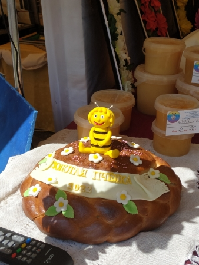

XX Международный фестиваль детского творчества «Золотая пчёлка». С 26 по 29 мая 2022 г. в нашем городе проходил юбилейный XX Международный фестиваль детского творчества «Золотая пчёлка». Несмотря на дождь, вечером 27 мая праздничное открытие Международного фестиваля детского творчества «Золотая пчёлка» началось вовремя. Площадь 50 лет Великого Октября, на которой проходило красочное действо, и прилегающая к ней территория парка были полны зрителей. Масштабный форум в этом году собрал под своим крылом более 600 юных талантливых мальчишек и девчонок из шести стран: Беларуси, России, Армении, Кыргызстана, Узбекистана, Казахстана. На протяжении многих лет Международный фестиваль детского творчества «Золотая пчёлка» зажигает немало ярких звёздочек и становится трамплином в творческое будущее. Многие из конкурсантов получили признание зрителей, уважаемого жюри и стали обладателями Гран-при. Некоторые из них порадовали зрителей своими творческими номерами на праздничном концерте «Золотая пчёлка. 20 лет вместе». На сцене выступили обладатели Гран-при фестиваля разных лет: образцовая студия моды «Авангард» Могилёвского областного центра творчества, участница российского телевизионного шоу «Голос. Дети», представитель Беларуси на Международном песенном конкурсе «Евровидение-2020», трижды стипендиат специального фонда Президента Республики Беларусь по поддержке талантливой молодежи, солистка продюсерского центра «Ангелы добра» г. Могилёва Арина Пехтерева, заслуженный любительский коллектив Республики Беларусь образцовая цирковая студия «Арена» «Городской дворец культуры г.Орша», заслуженный любительский коллектив Республики Беларусь народный фольк-шоу балет «Альянс» ГУО «Гимназия-колледж искусств г. Бобруйск». С нетерпением зрители ждали выступление членов жюри. И не зря. Музыкальные номера заслуженного деятеля искусств Республики Беларусь, белорусского композитора и исполнителя, доцента кафедры искусства эстрады учреждения образования «Белорусский государственный университет культуры и искусств», обладателя медали Франциска Скорины, лауреата премии Союзного государства, лауреата премии Федерации профсоюзов Беларуси, председателя жюри жанра «Вокальное искусство» Олега Елисеенкова и заслуженного деятеля культуры Республики Беларусь, художественного руководителя Национального центра музыкальных искусств имени Владимира Мулявина Светланы Стаценко были выше всяких похвал. Аплодисментами встречали и гостей фестиваля: лауреата международных конкурсов и фестивалей, участника музыкальных и телевизионных проектов, солиста Белорусского молодежного театра эстрады Дмитрия Сергеева и белорусского исполнителя, телеведущего, композитора и аранжировщика, представителя Беларуси на конкурсе «Евровидение» Тео и других. Конечно же, свои яркие, оригинальные музыкальные и хореографические номера зрителям дарили конкурсанты 20 юбилейного фестиваля и просто талантливые дети и подростки — представители разных творческих коллективов. В субботу, 28 мая, после церемонии вручения дипломов участникам юбилейного ХХ Международного фестиваля детского творчества «Золотая пчёлка» на площади 50 лет Великого Октября состоялся гала-концерт «Золотое созвездие талантов», во время которого были вручены дипломы лауреатам фестиваля — самым ярким и одаренным юным «звёздочкам». Дипломами третьей степени отмечено 39 конкурсантов, второй степени — 33. Дипломами первой степени в жанре «Вокальное искусство» были награждены: Валерия Шубич, солистка креативной студии современных исполнительских искусств «Medley Vocal School»; Андрей Пузенков, учащийся УО «Могилёвская государственная гимназия-колледж искусств имени Евгения Глебова»; Валерия Николаева, солистка вокальной студии «ARTIST»; Ангелина Самолетова, солистка народной эстрадной студии «Лира» ГУК «Светлогорский центр культуры»; Цветана Рабеева, учащаяся ГУО «Могилёвская детская школа искусств № 5»; образцовый вокальный ансамбль «Песенка» (средний состав) ГУО «Дворец детей и молодежи «Золак» г. Минска»; вокальная группа «Новое поколение» заслуженного любительского коллектива Республики Беларусь образцовой детской эстрадной студии «Весёлые нотки» ГУДО «Центр творчества «Эверест» г. Могилёва»; вокальный дуэт в составе Кристины Старостиной и Ксении Куродовой ГУО «Могилёвская детская школа искусств № 7» (все — Республика Беларусь); ансамбль народной песни «Канарейка» государственного бюджетного общеобразовательного учреждения школы № 645 Пушкинского района Санкт-Петербурга (Российская Федерация). В жанре «Хореографическое искусство» Дипломы первой степени были вручены: образцовому хореографическому ансамблю «Василёк» ГУО «Центр дополнительного образования детей и молодежи «Росквит» г. Бобруйска»; танцевальной группе «PINEAPPLE» заслуженного любительского коллектива Республики Беларусь образцового эстрадного театра-студии «Радуга» ГУДО «Могилёвский областной центр творчества»; танцевальной группе «Акварэлі» заслуженного любительского коллектива Республики Беларусь образцового эстрадного театра-студии «Радуга» ГУДО «Могилёвский областной центр творчества»; образцовому ансамблю танца «Карусель» ГУО «Средняя школа № 162 г. Минска» (все — Республика Беларусь); танцевальному коллективу средней общеобразовательной школы «Нур» (Республика Кыргызстан). Дипломами первой степени в жанре «Изобразительное искусство» были награждены: Валерия Чупилина, учащаяся ГУО «Могилёвская детская школа изобразительных искусств»; Дарья Бручикова, учащаяся ГУО «Могилёвская детская школа искусств № 1»; Валерия Кордон, учащаяся ГУО «Сельская детская школа искусств Климовичского района»; Каролина Исаченко, учащаяся ГУО «Сельская детская школа искусств Климовичского района»; Анна Бордюгова, учащаяся ГУО «Могилёвская детская школа изобразительных искусств» (все — Республика Беларусь). Наивысшей награды фестиваля — Гран-при — в этом году были удостоены талантливые и целеустремленные «звёздочки» из Беларуси: Каролина Васильева, солистка образцового вокального ансамбля «Песенка» ГУО «Дворец детей и молодёжи «Золак» г. Минска»; ансамбль мальчиков образцового вокального ансамбля «Песенка» (старшая группа) ГУО «Дворец детей и молодёжи «Золак» г.Минска» (жанр «Вокальное искусство»); образцовый хореографический ансамбль «Улыбка» культурно-спортивного центра РУП «Могилёвское отделение Белорусской железной дороги» (жанр «Хореографическое искусство»); Полина Зубарева, учащаяся ГУО «Могилёвская детская школа изобразительных искусств» (жанр «Изобразительное искусство»).
По материалам газеты «Родная нива» .
|